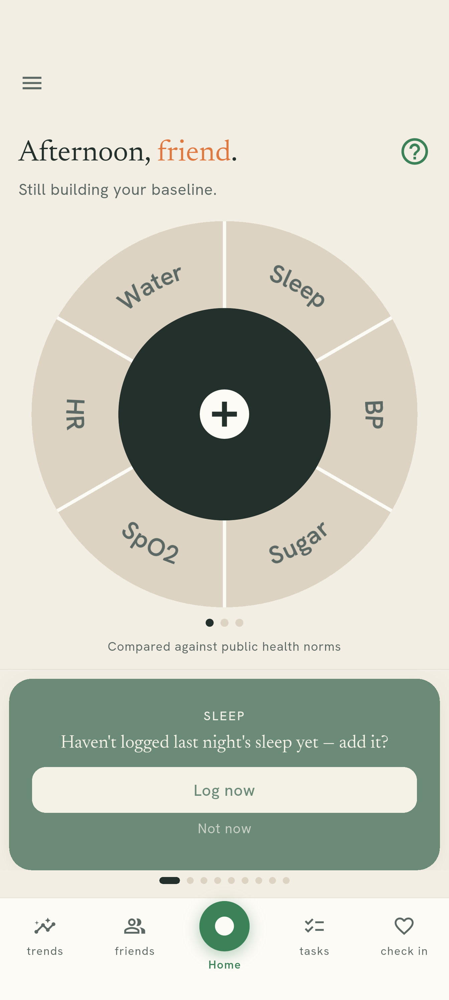
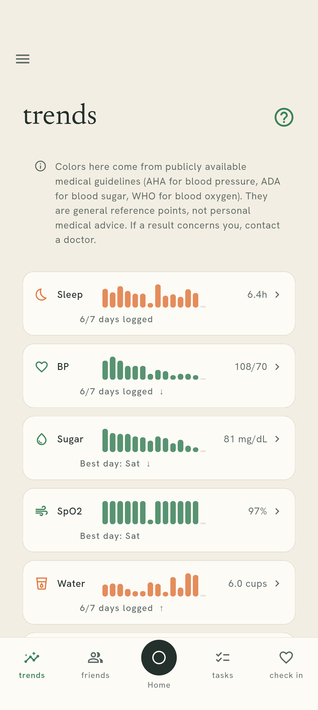
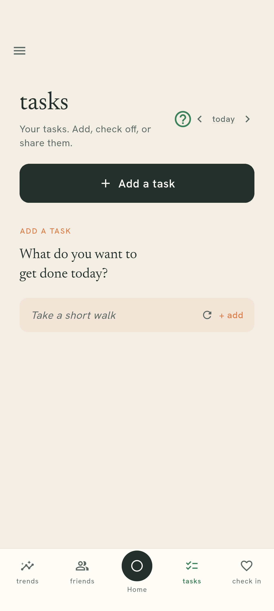
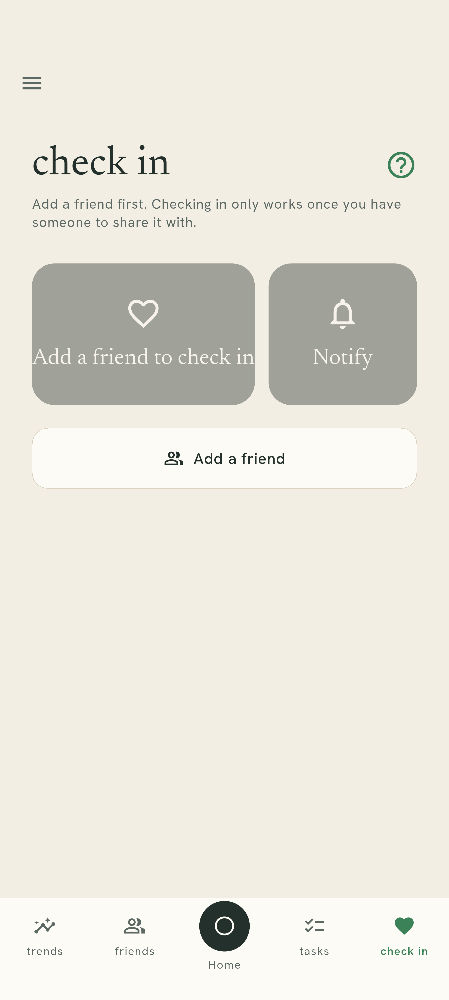
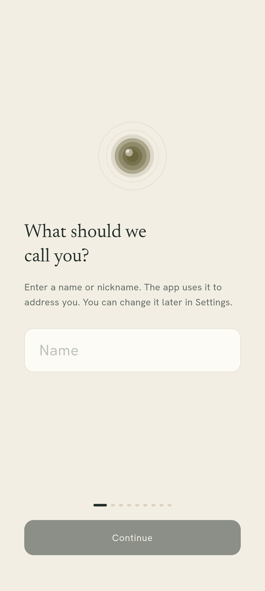

Day-to-day readings
Sleep, blood pressure, blood sugar, blood oxygen, heart rate, water, and trackers you define yourself. One wedge each on the home wheel: tap, enter, done.
Features
Everything below ships today. Nothing here is planned, in beta, or described from a design document.





Sleep, blood pressure, blood sugar, blood oxygen, heart rate, water, and trackers you define yourself. One wedge each on the home wheel: tap, enter, done.
A symptom journal, a cycle calendar, and a weight trend each get their own page rather than a wedge, because "logged today" is not a useful thing to say about them.
Every metric you track appears here whether or not it has data yet, with a chart and the latest value. Colours come from published general guidelines, not from anything personal to you.
A list with daily doses to tick off. If you share the category, a carer sees adherence — and, only if you tag them, which medications.
Added by a short code you share directly. No usernames, no directory, no search — if you have not handed someone your code, they cannot find you.
A daily "I'm all right" that friends can see. It carries a date and nothing else.
A task you and a friend can both see and tick off. The text is encrypted on your phone to the people on the task, so the server stores words it cannot read.
Someone who looks after you sees whether you logged a category today — never the number, unless you approve a specific request for it.
Biometrics or a PIN in front of the app.
An encrypted file you control. See Help for what cannot be recovered.
One metric per page with a small chart, rotating on its own.
Short articles, fetched in a way that is not tied to you.